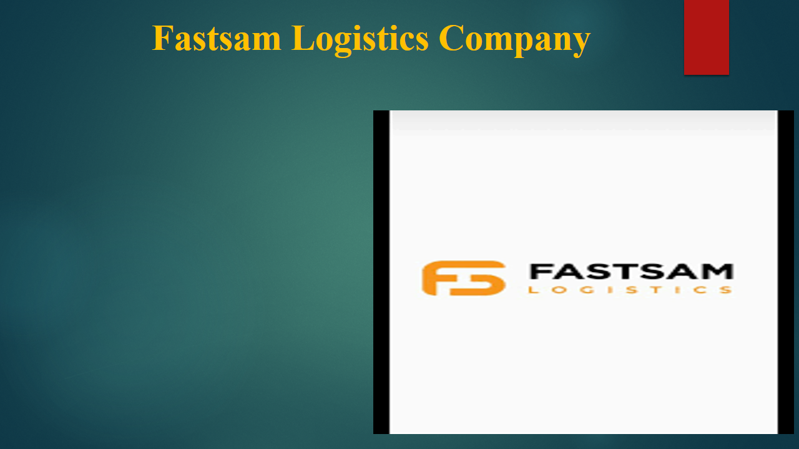
Welcome to my presentation. I will present the findings and recommendations from my consultancy project with Fastsam Logistic Company, a growing logistics firm based in Abeokuta, Ogun State. The company specializes in integrated transportation, warehousing, and fulfillment services across Southwest Nigeria. Over the past years, Fastsam has faced significant operational challenges, including rising fuel prices, limited fuel supply, multiple taxation, poor infrastructure, insecurity, and political instabilities. These challenges have affected timely deliveries, increased operational costs, and impacted service quality. The objective of this consultancy project was to analyze these challenges and provide data-driven, practical, and sustainable solutions to enhance efficiency, reduce costs, and improve overall service delivery. In this presentation, I will cover the final recommendations, their justifications, benefits, and reflections on the consultancy process.
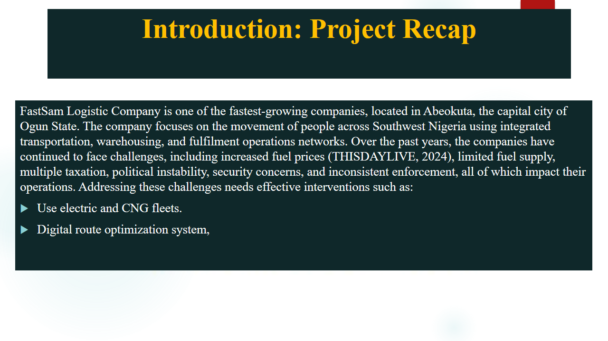
Fastsam Logistic Company is one of the fastest-growing firms in Abeokuta, Ogun State, playing a central role in moving people across Southwest Nigeria through integrated transportation, warehousing, and fulfillment operations. Despite its growth, the company has continued to face persistent challenges such as rising fuel prices, limited supply (THISDAYLIVE, 2024), multiple taxation, political instabilities, security concerns, and inconsistent regulatory enforcement. These issues increase costs, disrupt operations, and limit efficiency. To address them, effective interventions are required. The company needs to transition to electric and CNG fleets to reduce fuel dependency and adopt a digital route optimization system to improve delivery efficiency.
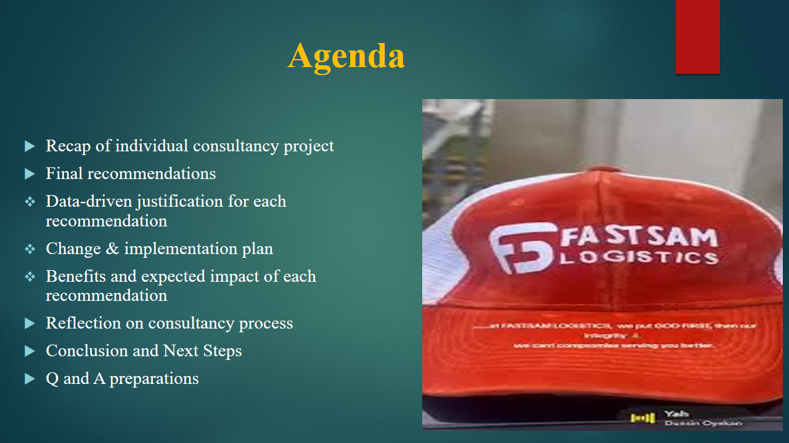
The agenda for this presentation begins with a brief recap of the consultancy project, followed by final recommendations to address operational challenges faced by Fastsam Logistics. I will provide data-driven justifications for each recommendation, supported by company data and survey findings. Next, I will outline a high-level implementation plan with steps, resources, and timelines. This will be followed by an analysis of expected benefits and impacts, reflections on the consultancy process, and finally a summary with proposed next steps for Fastsam Logistics and my professional growth.
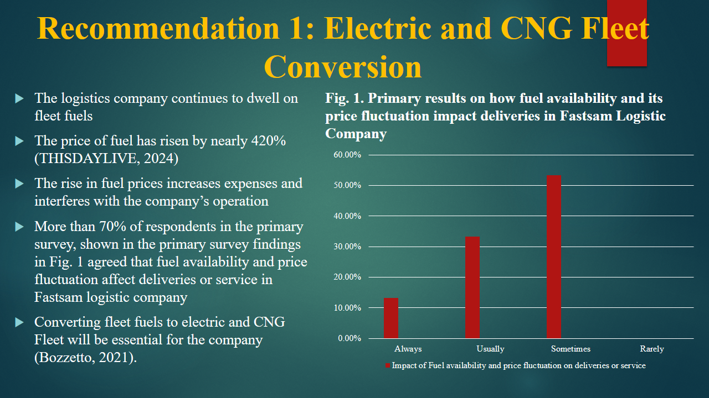
The rising fuel prices have significantly impacted Fastsam Logistic Company’s operations, with prices increasing nearly 420% (THISDAYLIVE, 2024). The fluctuations increase costs and affect timely deliveries. Our survey confirms that over 70% of respondents said fuel volatility directly affects daily operations. To address this, adopting a digital route optimization system is essential. It leverages real-time traffic, weather, and security data to identify efficient routes, reducing fuel use and travel time. Combined with a shift to electric and CNG fleets (Bozzetto, 2021), this ensures sustainable cost reduction and improved performance.
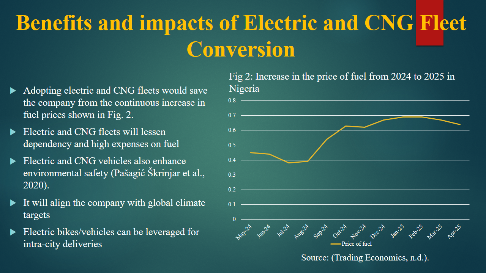
Transitioning to electric and CNG fleets presents a strategic opportunity to reduce operational costs and improve sustainability. Survey findings show rising fuel prices continue to strain logistics operations. Electric and CNG vehicles reduce dependency on petrol and diesel, cut expenses, and lower emissions (Pašagić Škrinjar et al., 2020). Greener fleets also align with climate targets, strengthening corporate responsibility. Electric bikes and vehicles can be deployed for intra-city deliveries as cost-effective, efficient, eco-friendly solutions.
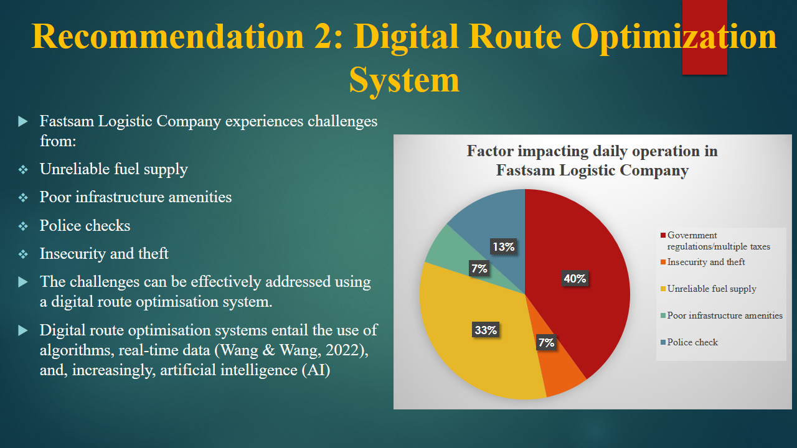
Fastsam Logistic Company faces challenges such as unreliable fuel supply, poor infrastructure, frequent police checks, and insecurity along delivery routes. These cause delays, raise costs, and reduce customer satisfaction. A digital route optimization system is highly recommended, using AI and real-time data to find safe, fast, cost-effective routes (Wang & Wang, 2022). This improves efficiency, reduces fuel consumption, enhances driver safety, and ensures consistent service quality despite infrastructure and security challenges.
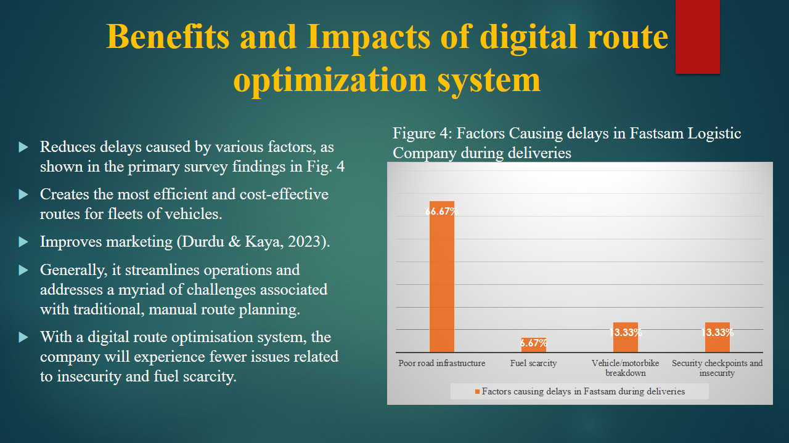
Adopting a digital route optimization system offers major benefits. It reduces delays from traffic congestion, roadblocks, and supply disruptions. Real-time data creates efficient, cost-effective routes, lowering fuel use and expenses while improving service delivery. Research (Durdu & Kaya, 2023) shows it strengthens customer satisfaction and marketing through timely deliveries. Overall, it streamlines operations, minimizes risks, and ensures resilience against insecurity and fuel scarcity.
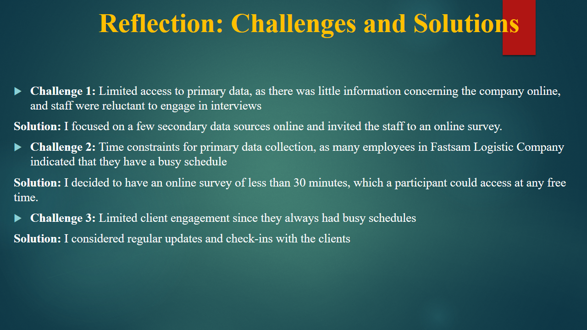
During this consultancy project, I encountered four challenges: (1) Limited access to primary data meant I used alternative secondary sources and online surveys. (2) Time constraints since staff were busy, so I designed a short survey open for three weeks. (3) Limited client engagement due to busy schedules, resolved by regular updates. (4) Balancing data validity while ensuring insights remained useful.
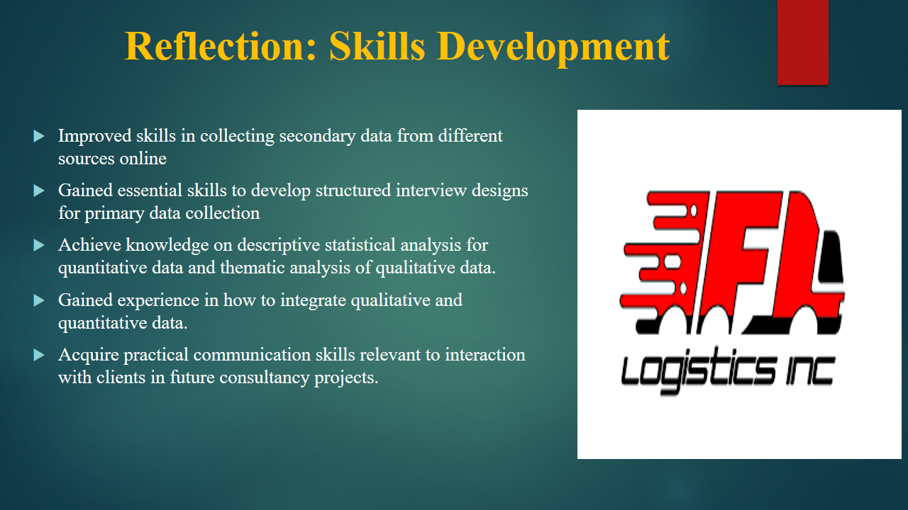
A critical skill I developed was advanced research capability. I mastered secondary data collection from credible logistics sources, government databases, and competitor analyses. I also improved in designing structured interviews for Fastsam’s context. The project required data analysis using descriptive and thematic analysis, blending qualitative and quantitative insights. I also improved communication skills essential for consultancy work.
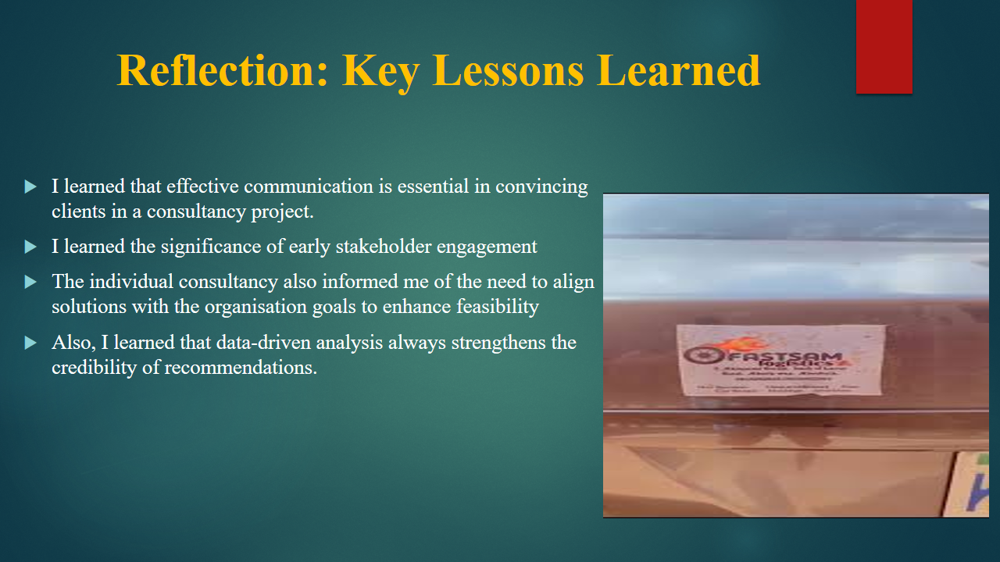
This project gave me valuable lessons: (1) Effective communication is essential in convincing clients, requiring clear and persuasive framing. (2) Engaging stakeholders early builds trust, reduces resistance, and eases implementation. (3) Recommendations must align with organizational goals to enhance feasibility. (4) Data-driven analysis strengthens credibility by providing tangible evidence for strategies.
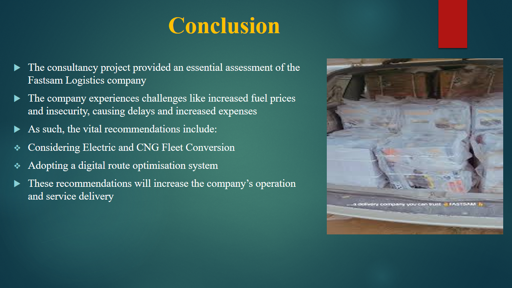
The consultancy project assessed Fastsam Logistic Company and its challenges: rising fuel prices and insecurity along routes, leading to delays and higher costs. Two recommendations were proposed: (1) Transition to electric and CNG fleet to cut fuel dependency and support sustainability. (2) Adopt a digital route optimization system to minimize risks and ensure timely deliveries. Together, these improve performance, reduce costs, and strengthen service delivery.
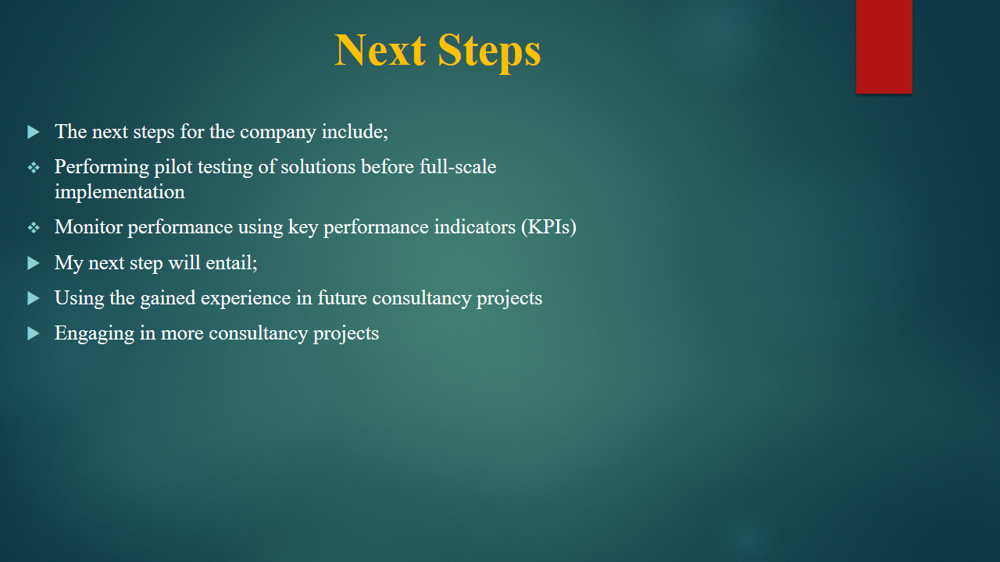
Next steps: Conduct a pilot test of solutions like fleet conversion and route optimization to test feasibility before scaling. Track performance using KPIs (cost savings, efficiency, sustainability outcomes). I will apply gained knowledge in future consultancy projects to communicate effectively with clients and provide reliable solutions.